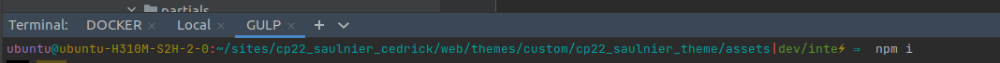
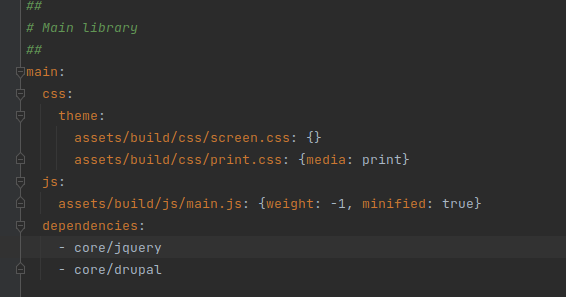
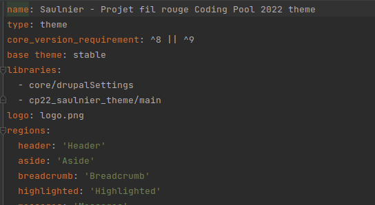
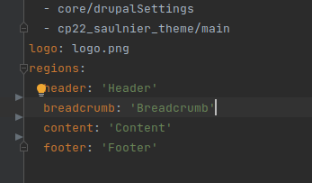
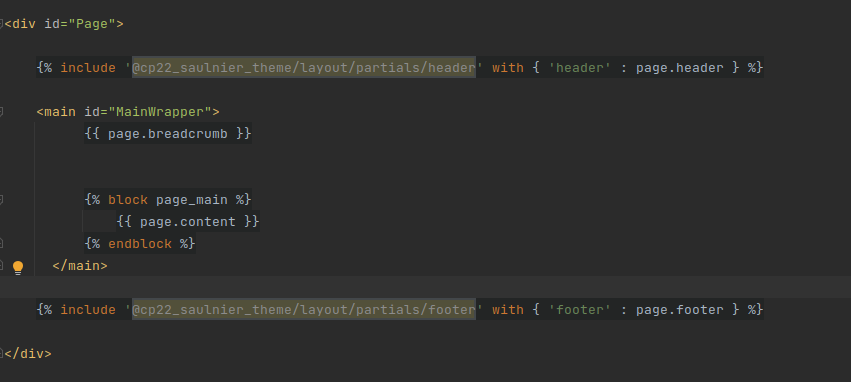
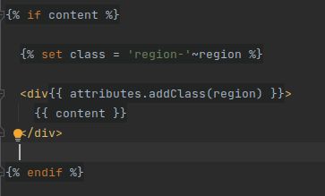
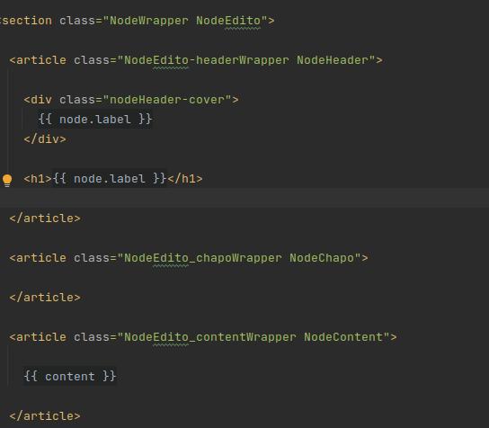
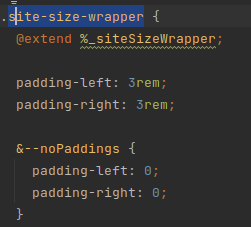

Gulp est un gestionnaire de paquets et de librairies
L'idée est de charger le js pour les pages lorsque l'on en a besoin et optimiser les ressources des sites. Gulp est très bon pour cela (bien mieux que le webpack).
Dans le terminal ouvrir le dossier assets et faire un npm install

Dans asset, il y a le fichier config.example.json, on le copie et renomme en config.json avec la bonne adresse locale
suppression du dossier /node_module et reinstallation de npm
installation de sass
npm install sass
GULP Utilisation
Dans le fichier gulpfile.js on peut voir les diférentes commandes de gulp
Pour que gulp soit à l'écoute on lance gulp dans le terminal au niveau du dossier comprenant assets dans le theme
Watch tout le scss pour le mettre en css (la base de sass)
gulp
Builder sans watcher
gulp build
Creation scss
On peut modifier le scss directement en ouvrant le fichier _global.scss
Rappels SCSS
Dans le fichier cp22_saulnier_theme.librairie.yml
Une librairie est un ensemble de fichiers css et js

Dans le fichier theme.info on peut voir comment sont chargées les librairies

Les régions
On verifie les maquettes et les spécisifiactions du projet
On doit considérer des ensembles :
On demarre de grands ensembles pour aller vers des petits éléments
les régions sont principalement sur drupal
pour les régions desktop
Header
Fil d'arianne
Main
footer
pour les régions mobiles
Header
Main
footer
Modification des régions
dans le fichier nom_theme.info.yml

puis modification du page.html.twig

Dans le twig on peut :
setter une class avec :
{% set class = 'region-'~region %}
ajouter une classe à un élément :
{{ attributes.addClass(region) }}>

Les notations dans twig
Pour les noms de classes
On note d'abord le plus grand élément
Si il y a un élément en dessous on le note avec un tiret

Architecture de modification du scss
on doit creer un dossier dans entities/nodes/edito/edito.scss --> si le nom de twig est edito
Pour chaque view mode il y aura un template.
Dans l'idée il y aurait une librairie par templates
Nomenclatures et poids css
Utilité du système avec les tirets : Dans le css les sélecteurs ont un poids. Dès lors, le système de tirets permet d'anihiler ca et d'être très précis. Le tiret créé un seul ensemble de classe
.NodeEdito --> correspond à la class NodeEdito
&-chapo --> indique que l'on rajoute -chapo à .NodeEdito

Construction du template twig
Le premier element de classe permettra de configurer le groupe d'éléments
Lorsque l'on rajoute des variantes d'affichage on creera une 2e classe (les modificateurs)
Ex: un block avec image, texte et bouton. Pour la couleur du texte on utilisera des modificateurs
Id vs classes
les id on les utilise peu, seulement pour des éléments ponctuels
les classes doivent être de 2 ou 3 par éléments maximum pour ne pas trop surcharger le css
Configuration du scss
Correction des bugs d'affichage
Config correction de bugs dans le layout adimeo (src/scss/layout/layout.css)
Un minimum de hauteur pour chaque element pour ne pas qu'il y ait de problement avec internet explorer 11
& > * {
min-height: 0.1rem;
}
On met un flex grow sur le content pour avoir le footer en bas de page
& > #MainWrapper {
flex-grow: 1;
}
On a la barre de menu pour les admin qui sont adaptés à chaque fenetre